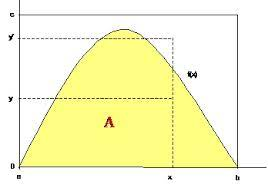

Métodos Para Generar Variables Aleatorias

Método de Rechazo
Método de Composición
Existen varios métodos que nos permiten generar variables aleatorias. Lo normal es que existan varias opciones para generar una misma variable aleatoria. La elección del método adecuado se puede basar en una serie de factores como:
Exactitud. Se prefiere un método exacto frente a métodos aproximados, como soluciones numéricas.
Velocidad. Uno de los datos que se toma en consideración es el tiempo de generación de la variable.